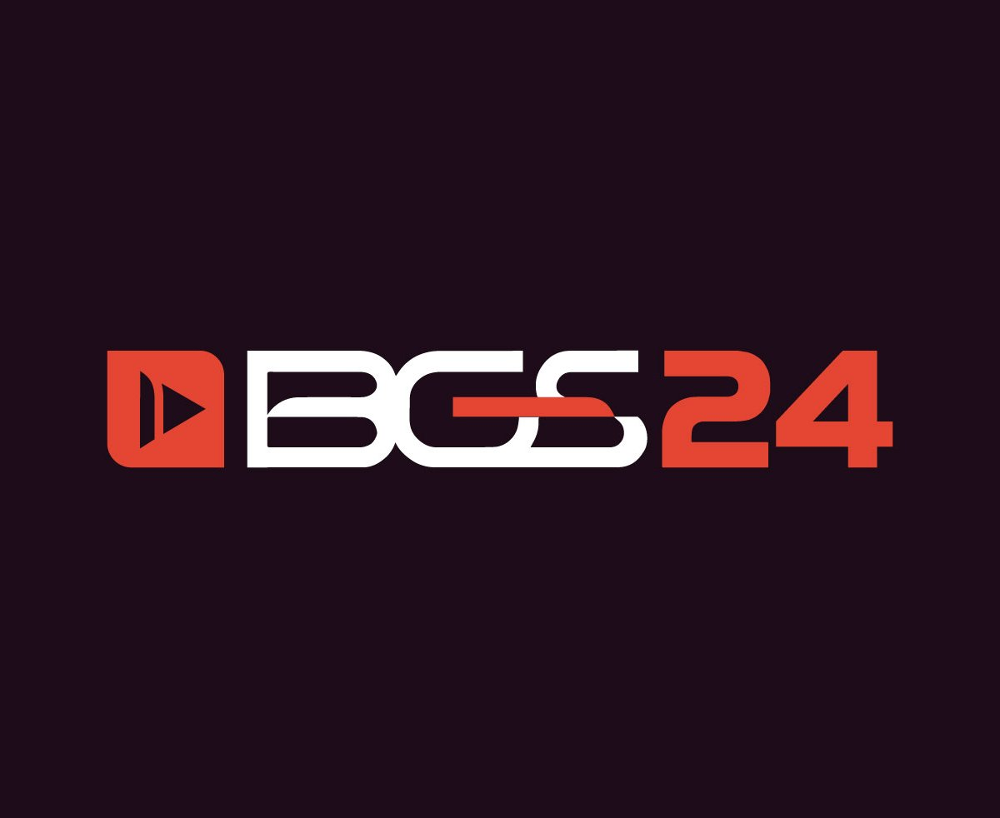

Funko Pop! Jujutsu Kaisen: Gojo, Sukuna, Itadori e mais personagens em promoção; confira
Criado pelo autor Gege Akutami, o mangá Jujutsu Kaisen se tornou muito popular e logo ganhou uma adaptação para a TV. O anime é exibido por aqui pela Crunchyroll.
A animação japonesa segue a história de Yuji Itadori, um jovem estudante do ensino médio bastante interessado em mistérios sobrenaturais. Apesar de seu talento para atividades físicas, ele deixa de lado os clubes de esportes tradicionais e opta por se juntar a um grupo dedicado a usar o tempo depois das classes para pesquisar o oculto.
Quando seus amigos de clube descobrem um estranho dedo podre, o xamã Megumi Fushiguro aparece em sua escola e informa a Yuji que o dedo é, na verdade, um perigoso talismã amaldiçoado. O poder do item mágico acaba atraindo criaturas conhecidas como Maldições até a escola, pondo em risco a vida de todos.
Sem saber o que fazer, já que não tem poderes mágicos para combater as Maldições, Yuji decide engolir o dedo podre para salvar Megumi e seus amigos de clube. Ao consumir o talismã, o rapaz passa a ser hospedeiro de Sukuna, uma poderosa e maligna Maldição e inicia sua jornada com os feiticeiros.
Abaixo, você confere uma seleção de Funko Pop! Jujutsu Kaisen com preço mais baixo, a partir de R$ 90:
BGS 2024: Veja datas, preços e todas as atrações confirmadas

A BGS 2024 está chegando! A maior feira de games da América Latina será realizada entre os dias 9 a 13 de outubro, em São Paulo, e promete ter mais um ano recheado de atrações, seja de convidados internacionais, como jogos a disposição do público.
E para te ajudar a organizar a sua agenda para o evento, hoje o Voxel traz um compilado com as principais atrações da feira, além de informações para fazer a compra do seu ingresso para a Brasil Game Show 2024.
Assim como em todas as edições mais recentes, a BGS 2024 também contará com a presença de convidados internacionais no evento. Os destaques deste ano ficam para Roger Clark, dublador de Arthur Morgan em Red Dead Redemption 2, Neil Newbon, Ator e dublador do Astarion em Baldur's Gate 3, e Ikumi Nakamura, ex-diretora criativa da Bethesda.
Preço, data e onde comprar ingressos
Quando: A BGS 2024 será realizada entre os dias 9 a 13 de outubro. Sendo o 1º dia exclusivo para imprensa e negócios, além dos portadores do Passaporte Premium e Passaporte Camarote
Onde será o evento: Expo Center Norte - Rua José Bernardo Pinto, 333 – Vila Guilherme, São Paulo/SP
Horário: Todos os dias das 13h às 21
- Individual 10 ou 11 de outubro (meia-entrada): R$ 318 o ingresso individual válido para 1 (um) dia escolhido (10 ou 11/10).
- Passaporte Premium (meia-entrada): R$ 1.049 – Passaporte Premium individual válido para todos os dias, incluindo dia exclusivo para imprensa. Ganhe uma camisa oficial da #BGS24 (retirada no evento). Dá acesso 1h antecipado e entrada exclusiva.
- Passaporte Business (meia-entrada): R$ 1.119 - Passaporte Business individual válido para todos os dias, incluindo dia exclusivo para imprensa. Dá acesso 1h antecipado e entrada exclusiva. Dá acesso a área business e ao matchmaking Game Connection.
- Passaporte Camarote: R$ 3.199 - Passaporte camarote individual válido para todos os dias, incluindo dia exclusivo para imprensa. Dá acesso 1h antecipado e entrada exclusiva. Dá acesso ao camarote da arena principal com snacks, energéticos e lounge exclusivo.
Deadpool & Wolverine é o filme mais pirateado da semana após lançamento digital! Veja top 10
Mais um fim de semana chegou e, com ele, seu quadro semanal favorito. Sim, é hora de descobrirmos quais foram os filmes mais pirateados da semana e discutir um pouco sobre cada um deles, entendendo o que tem chamado atenção dos internautas em sites de download de torrents. Será que temos muitas novidades desta vez ou ficamos estagnados com os títulos das semanas anteriores? Veremos!
Abaixo, confira a lista completa com os filmes mais quentes desta semana na internet!
- Deadpool & Wolverine
- Lobos
- The Killer's Game
- Não Fale o Mal
- Divertida Mente 2
- A Hora do Vampiro
- Pisque Duas Vezes
- Meu Malvado Favorito 4
- Bad Boys: Até o Fim
- Furiosa: Uma Saga Mad Max